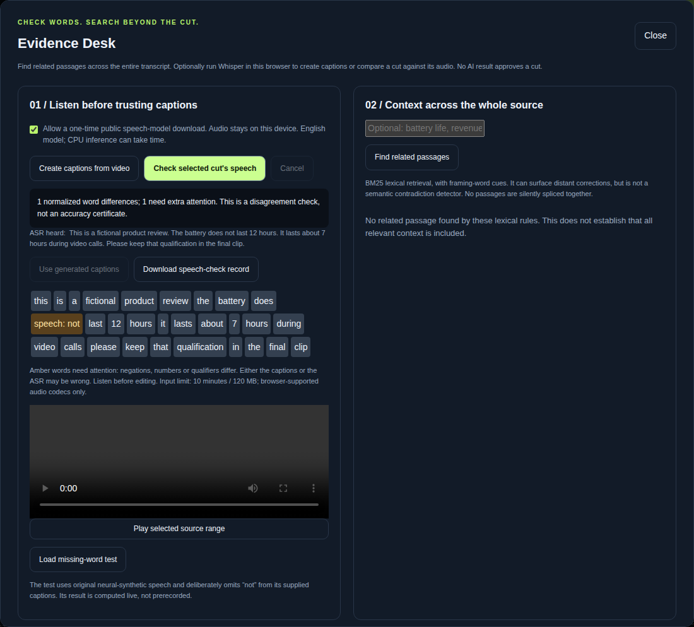
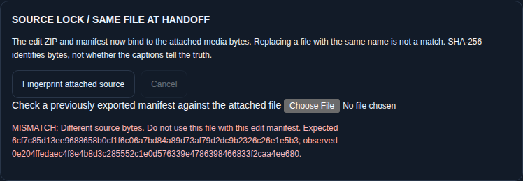

The caption is wrong.
A negation, number or qualification disappears from the supplied transcript.
Listen and compare.
A creator tool that does the work
From an English recording to captioned clips and a source-bound editing handoff.
Joseph Ayanda · Solo builder · September 2026
Working open-source prototype, not a subscription service.
Shorter is not automatically faithful
A negation, number or qualification disappears from the supplied transcript.
Listen and compare.
The excerpt is real, but a related correction sits elsewhere in the source recording.
Inspect beyond the cut.
An editor receives a same-name video that is not the exact media used for the edit plan.
Verify the handoff.
Evidence Desk
Whisper-tiny.en processes the actual selected audio in a browser worker. The supplied caption is not passed to the model as its answer.
01 / Generate timestamped captions from a recording, or import SRT, VTT or JSON.
02 / Compare supplied captions with recognized speech. Highlight disagreements.
03 / Review the source, edit explicitly, and keep the decision visible.
Optional model downloads require consent. Media is not uploaded. ASR can be wrong; agreement is not certification.

From review to deliverable
Select a contiguous source range.
Inspect related context.
Approve explicitly.
Compute media SHA-256
and byte count.
Capture the editing state.
Export captioned WebM or an edit ZIP with an H.264/AAC renderer.

Editing during hashing aborts the export. Replacing media resets reviews. Restoring matching bytes never restores approval.
The native renderer checks the source lock before output creation. A digest identifies bytes, not truth, authorship or consent.
A browser tool, not a remote inference wrapper
Web Audio decoding · SRT/VTT/JSON import · editable timed cues
Whisper-tiny.en · pinned model revision
Transformers.js 3.8.1 + ONNX Runtime Web
TF-IDF/diversity clip ranking
BM25 + lexical framing cues for context
Changed transcript, selection or media invalidates affected approvals and checks.
Captioned portrait WebM with source audio
Timed captions · review report · manifest
Python + FFmpeg H.264/AAC route
Reproducible internal checks
Actual Whisper inference, caption editing, reviewed-only export, source mismatch rejection and decoded video output. Published assets match the verified release.
10 / 15 risky cuts flagged; 5 missed.
2 / 9 safe cases falsely flagged.
Small internal diagnostic, not representative accuracy. Source Lock does not improve this separate score.
Make review easier, not invisible
Caption preparation, source-context inspection, explicit review and actual exports in one tool.
English input: up to 10 minutes / 120 MB. Browser encoding is real-time, not frame-exact.
Compare manual editing with CutProof on consented recordings. Measure review time, missed corrections, false alarms and usable exports.
Proposed test, not completed user research.
Better word alignment and retrieval; verify desktop-editor imports; test longer recordings only after memory and latency checks.
Commercial hypothesis: paid setup or team workflow support. No revenue claimed.
Try the failure cases, not just the happy path
Joseph Ayanda · Solo builder. Original application created September 6–8, 2026 with substantial AI assistance. Original code: MIT; third-party licenses retained. Demonstration narration: disclosed stock Kokoro synthetic voice. This is the same CutProof project also entered in AI Content Engine, not a separately invented product. No award or cash receipt is claimed.